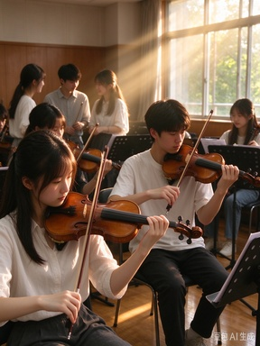

这里记录了小提琴社一整个学期的主要活动：从新成员见面会到毕业季送别演出， 从每周固定的集体排练到夏夜草坪上的“夜琴房”。如果你是从招新网页点过来的， 下面的内容能让你更具体地知道，加入这个社团之后你会经历些什么。
一、每周常规活动
集体排练
社团最核心的活动。前半段分声部加练，后半段全团合排，学期末会完整过一遍演出曲目。
自由练琴
琴房全天开放，公用琴可借用。助教会轮流值班，帮新社员纠正姿势、解决音准问题。
音乐沙龙
坐在排练厅的地板上随意演奏、随意聊天，不打分也不点评，是社团最放松的时刻。
二、学期重点活动
- 三月 · 新成员见面会
介绍社团历史、组织架构与学期计划，完成新老社员结对。地点：艺术楼 A-201。 - 三月 · 小提琴基础教学公开课
李承泽老师主讲，内容涵盖持琴、运弓、左手手型与音准判断。与新成员见面会同在一间教室。 - 四月 · 重奏组组建
按水平与声部需求编成三到五人的小型室内乐组合，确定本学期重奏曲目。 - 四月 · 与青年演奏员面对面
邀请市交响乐团青年演奏员来校交流，现场示范并回答关于练琴与考级的问题。 - 五月 · 琴房开放日
全天开放 A-201，任何人可进来看排练、试琴、咨询；同期举办二手琴交易会。 - 六月 · 毕业季送别演出
一学期最重要的一场演出，弦乐团与重奏组全员登台，压轴通常是全体合奏。

三、活动之外
除固定安排外，社团每年还会组织一些“不那么正式”的活动。夏夜的“夜琴房”是其中最受欢迎的一个：大家把琴搬到操场的草坪上，关掉大灯，只点几盏蜡烛，拉给路过的人听。没有节目单，也没有主持人，谁想拉就走到中间去。
社团也做公益演出。去年四月我们去市第二福利院做了一场二十多分钟的演出，曲目全是老人家熟悉的旋律；每年六月还会参与学校的毕业季快闪。这些活动不计算在考核里，也不强制参加，但参与过的人大多会记得很久。
如果你对上面任何一项活动感兴趣，欢迎在招新期间来 A-201 看一眼。工作日下午三点到六点，琴房基本都有人。
看完了？回到招新主页，填写在线报名表，我们在 A-201 等你。
返回小提琴社招新网页 →